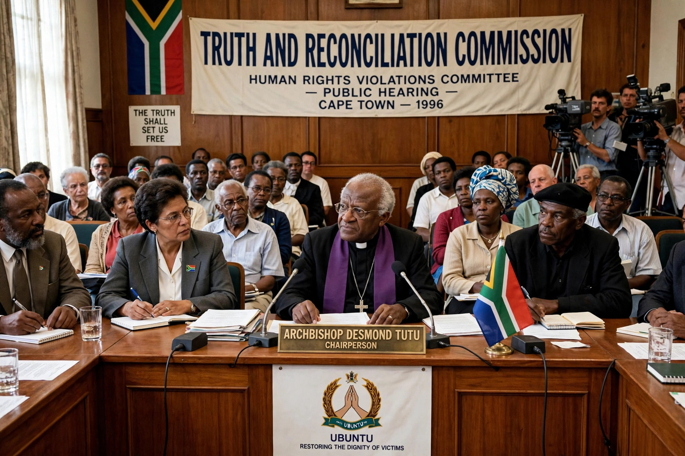

A truth commission, or truth and reconciliation commission, is an official body tasked with discovering and revealing past wrongdoing by a government or other actors, in the hope of resolving conflict left over from the past. Such commissions are part of transitional justice.

Notable commissions include Argentina's CONADEP (1983), Chile's Rettig Commission, South Africa's Truth and Reconciliation Commission (1995–2002) chaired by Archbishop Desmond Tutu, which offered amnesty in exchange for full disclosure, commissions in Peru, Liberia, Sierra Leone, and Canada's Truth and Reconciliation Commission (2008–2015) on the residential school system for Indigenous peoples.
Debates concern whether truth without prosecution delivers justice, whether amnesties entrench impunity, and whether commissions achieve reconciliation in practice. Supporters point to official acknowledgment, victim testimony, and historical records that trials alone rarely produce.